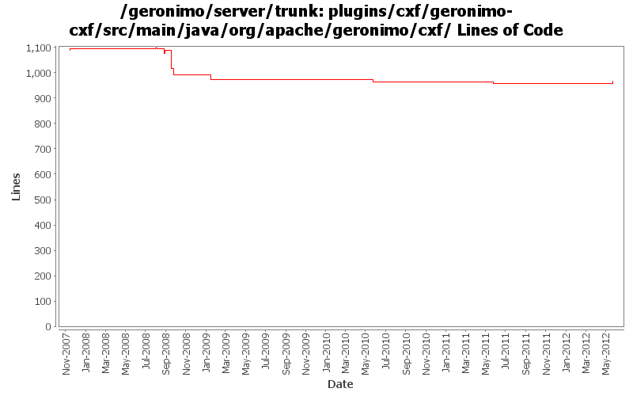

[root]/plugins/cxf/geronimo-cxf/src/main/java/org/apache/geronimo/cxf
 client
(4 files, 322 lines)
client
(4 files, 322 lines)
 pojo
(3 files, 307 lines)
pojo
(3 files, 307 lines)

| Author | Changes | Lines of Code | Lines per Change |
|---|---|---|---|
| Totals | 45 (100.0%) | 205 (100.0%) | 4.5 |
| gawor | 28 (62.2%) | 110 (53.7%) | 3.9 |
| xuhaihong | 8 (17.8%) | 90 (43.9%) | 11.2 |
| djencks | 1 (2.2%) | 3 (1.5%) | 3.0 |
| jdillon | 8 (17.8%) | 2 (1.0%) | 0.2 |
Merge changes from GERONIMO-6341 orm.xml does not take effect in latest Geronimo 3.0 beta branch.
9 lines of code changed in 1 file:
GERONIMO-6058 Replace StringBuffer usage with StringBuilder
1 lines of code changed in 1 file:
GERONIMO-5990 A JAXWSApplicationContext GBean is added to hold all the available port info in the current web or ejb module
I hope that in the future, we could have a way to avoid create each factory gbean for each web service endpoint, and there will be a method like getWebServiceContainer method in this gbean
1 lines of code changed in 1 file:
1. Use the new unmarshall method to parsing handler configuration files
2. Use Info style serializable objects to hold the handler info, and avoid unwanted marshall/unmarshall
1 lines of code changed in 1 file:
1. Support lookup attribute for webservice ref
2. Enable webservices.xml override the configurations from annotations
3 lines of code changed in 1 file:
GERONIMO-5190 use openejb-jee jaxb tree for spec dds
3 lines of code changed in 1 file:
a. remove the use of configurationUrl \n b. Add a BundleAwareReference interface
40 lines of code changed in 2 files:
GERONIMO-5057 Use those xmlbeans generated by JAVA EE 6 schema files
35 lines of code changed in 1 file:
Support OASIS catalogs with Axis2 (GERONIMO-4501)
4 lines of code changed in 1 file:
fix oasis catalog support for CXF (GERONIMO-4501)
1 lines of code changed in 1 file:
override mtom setting only when it is explicitly set in the DD
1 lines of code changed in 1 file:
no need to override it anymore
2 lines of code changed in 1 file:
update service address in WSDL on each request (GERONIMO-4308)
16 lines of code changed in 3 files:
exclude fastinfoset library and some fixes for latest cxf
3 lines of code changed in 1 file:
create message of right type
11 lines of code changed in 2 files:
some more jaxws refactoring
6 lines of code changed in 1 file:
Make sure WebServiceContext.getEPR() returns right service address (part of GERONIMO-4263)
23 lines of code changed in 4 files:
Upgrade to CXF 2.1.x and refactor HandlerResolver code (GERONIMO-4263)
19 lines of code changed in 4 files:
handle missing wsdl better
1 lines of code changed in 1 file:
do not return wsdl for web services using http binding
12 lines of code changed in 3 files:
upgrade to cxf 2.0.6 (GERONIMO-4035)
0 lines of code changed in 2 files:
More loggers back to static
2 lines of code changed in 2 files:
(GERONIMO-3985) Use SLF4J as the primary logging facade for Geronimo
0 lines of code changed in 6 files:
SEI in deployment descriptor can override the WebService.endpointInterface attribute only if the attribute is not set
11 lines of code changed in 1 file:
let webservices.xml overwrite service endpoint interface attribute of the annotation (GERONIMO-3602)
0 lines of code changed in 2 files: